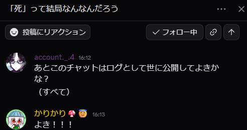
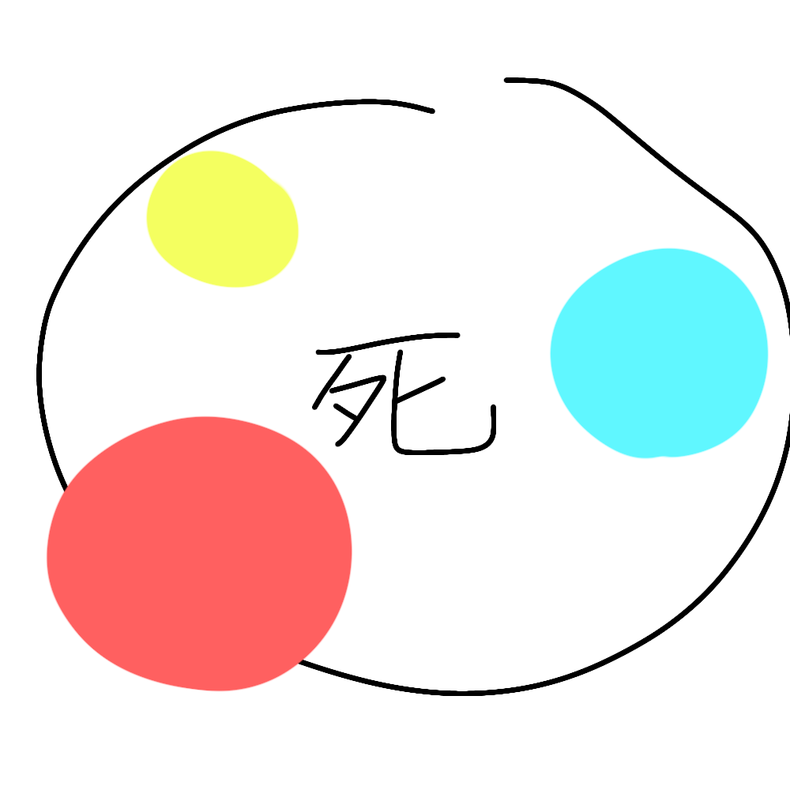

掲載許可はいただいております。
#思考、論考🧀>
「死」って結局なんなんだろう
つしま（かりかりのサブ垢！）スレ主— 昨日 22:39 あくまで自分の不完全な思想
つしま（かりかりのサブ垢！）スレ主—
昨日 22:40 まず、Wikipediaくんを引用してこよう
（し）とは、
命がなくなること[1]。生命がなくなること[2]。生命が存在しない状態[2]。
機能を果たせないこと、役に立てないこと、能力を行使できない状態[1]（ →
#比喩的な用法を参照）。
生命が途絶えるね。そうだね。
account._.4 — 昨日 22:41 キリスト教的な死（にわか）も調べてみると良いかも
つしま（かりかりのサブ垢！）スレ主— 昨日
22:41 https://ja.wikipedia.org/wiki/キリスト教における死
キリスト教における死
本項ではキリスト教の各教派における「死」の呼び方と死生観を記す。
account._.4 — 昨日 22:41 ちがうかも
つしま（かりかりのサブ垢！）スレ主— 昨日
22:41 違うか
account._.4 — 昨日
22:41 キルケゴール的死かも
つしま（かりかりのサブ垢！）スレ主— 昨日 22:41 あぁ
AIくんの要約だけどこんな感じか？
「自分自身であろうとしないこと」または「自分自身でありすぎる（絶望し続ける）こと」という精神の破綻（＝絶望）
account._.4 — 昨日 22:42
まあいろんな考え方の死を集めるのも良さそうだけど
>>>つしま（かりかりのサブ垢！）生命が途絶えるね。そうだね。つしま（かりかりのサブ垢！）スレ主— 昨日
22:42 でも途絶えるだけではないんだよなぁ
「終わる」ことは別に生命以外でもあるでしょうよ
account._.4 — 昨日
22:43 たしかに
作品も死ぬし
プログラマーは子を親ごと殺すし
なぜそこに死ぬや殺すという単語を持ってくるのか
そこに何か理由がありそうな気はする。
👈1 心が痛いという言い回しが世界の言語でわりと共通であるように
なにか
ありそ
>>>つしま（かりかりのサブ垢！）「終わる」ことは別に生命以外でもあるでしょうよつしま（かりかりのサブ垢！）スレ主— 昨日
22:45 死は、生命の価値をなくしてしまう
生前あれだけ大切に扱われていたのに
雑菌がーとか法律がーとかで
燃やされるんだよ
（前言った）
「死」って終わりそのものじゃなくて、終わりが与えるエネルギーなんじゃないか？どうだろう
account._.4 — 昨日 22:46 んぁー
納得はできないなあ
つしま（かりかりのサブ垢！）スレ主— 昨日 22:46 そうよねぇ
死っていろんな意味合いが含まれていて
それを完璧に統合、整理、理解することは難しいとは思う
👈1 account._.4 —
昨日 22:47 思ったのは、1番抽象的なのは、機能の停止？
👈1 >>>account._.4思ったのは、1番抽象的なのは、機能の停止？account._.4
— 昨日 22:47 生命としての機能停止
作品としての機能崩壊
つしま（かりかりのサブ垢！）スレ主— 昨日
22:48 「人は忘れ去られた時死ぬ」みたいなやつって結局アレなんなんだろう
account._.4 — 昨日 22:48
石を砕いても死ぬとは言わないのは、機能が変わってないから？
>>>つしま（かりかりのサブ垢！）「人は忘れ去られた時死ぬ」みたいなやつって結局アレなんなんだろうaccount._.4 — 昨日 22:48
僕、それは本人にとっては生前だけの話だとおもう
👈1 他者にとってはそうなのかも
>>>account._.4石を砕いても死ぬとは言わないのは、機能が変わってないから？つしま（かりかりのサブ垢！）スレ主— 昨日
22:49 「それ自体」に価値を見出すか見出さないかというのも関わってくるのかなぁ
account._.4 — 昨日 22:49 死と抹消ってちがうよな
つしま（かりかりのサブ垢！）スレ主—
昨日 22:49 多分
>>>つしま（かりかりのサブ垢！）「それ自体」に価値を見出すか見出さないかというのも関わってくるのかなぁaccount._.4 —
昨日 22:49 なくはなさそう。
あれだよな、［画材］が死ぬ！！！
とは一応言いそうだし
社会的な死も
価値じゃないか？
あ
価値じゃね？？
死んで話さなくなった人は、生きてるその人を大事にしてた人からしたら無価値じゃない
👈1
一応死骸という価値はあるけどネ
価値が変質してる
つしま（かりかりのサブ垢！）スレ主—
昨日 22:51 逆に死んだことによって価値が上がったケースってあるんかな
account._.4 — 昨日 22:51
と、いうことは自分自身の死を恐れるのは自分自身に価値があるかないかを常に判定してたりするんだろうか
>>>つしま（かりかりのサブ垢！）逆に死んだことによって価値が上がったケースってあるんかなaccount._.4 — 昨日 22:51 ある
生贄とか
キリスト様とか
まさに
つしま（かりかりのサブ垢！）スレ主— 昨日 22:52 んね
account._.4 — 昨日 22:52 うわー
それがあると一概に価値の停止とはいえねえ！
これあれだね
価値としての死と
生命としての死と
昇華としての死を
区別すべきかな？
とはいえ
かりさんの
思想を
聞きたい
かりさんが
死んだ
転送済み
睡眠を
"🧩わたし、しゃべる" • 昨日
22:52
これが死かぁ
かりかり🍄😇 —
11:52 死ってのは
あれかもしれない
複数の要素？があって
👂1
どの要素が一番強いかとかで
分けられると思う
account._.4 — 14:55
具体的に死の要素ってなんだ
つしま（かりかりのサブ垢！）スレ主— 14:55 そこなんだよなぁ
ただ、「価値の強さ」も入ってると思うんだ
👀1 死によって価値が上がる、下がる
そこの割合というか
うーむ
account._.4 — 14:56 あー
んー
なんだ
つしま（かりかりのサブ垢！）スレ主— 14:57 これの色ついてるアレの主張？

account._.4 —
14:57 ポジティブな死
ネガティブな死
（そして生まれる多大なる語弊）
つしま（かりかりのサブ垢！）スレ主— 14:57 あーー
account._.4 — 14:57
ほうはみだしてるのがあるのが気になる
つしま（かりかりのサブ垢！）スレ主— 14:57 あ
ミスだ
Sorry
account._.4 — 14:57 エ
つしま（かりかりのサブ垢！）スレ主—
14:57 １０ビィ雨くらいで描いたから…
１０秒だよ
account._.4
— 14:58 でもこの図見るに割とこんな感じな気がするぞ私
一部は死のうちだが死ではないものもある気がするぞ
👈1
うぇうぇうぇ
なんか
とりあえず
死っぽいものを並べ立てて分類してみる？
👍1 つしま（かりかりのサブ垢！）スレ主—
15:00 いいねぇ
account._.4 —
15:02 気になったけどウイルスにとっての死ってなんなんだろう
👈1 屍になる
殉教する
心中する
心を殺す
息を殺す
つしま（かりかりのサブ垢！）スレ主—
15:04 旅立つ？それは旅になぞらえているだけか
account._.4 — 15:04 あー
旅立つも死生観でてるよな
往く
逝く
これ我々漢字自体の意味あまり知らないね
調べてくる
しんにょうに、折れるの字が入った
ゆく。いく。去る。人が死ぬ。
みたいな意味らしく（漢字ペディア曰く）
折れる
たしかにこれも死かも
夭折ともいうしな
命を絶つともいう
が
命が折れるとはあまり言わない
志が折れるとはいう
命が断たれるは、逝くという意味ではもともと指さない説ある？（無知）
志半ばで逝くみたいな用法が始まりだったりするんかなあ
つしま（かりかりのサブ垢！）スレ主— 15:09 「息を殺す」「息を引き取る」みたいな
息系統の言葉
他にもありそう
account._.4 —
15:09 おぁ～
たしかに
Geminiに聞いたけどエビデンスがどこにあるかわからんから共有するにできない……
>>>account._.4命が断たれるは、逝くという意味ではもともと指さない説ある？（無知）account._.4 — 15:13
エビデンスないから何とも言えない～
ただ、
どこかに行くって意味が始まり
だったのが
婉曲表現として
死ぬになるってのが
旅立つも逝くも往くも共通なのだと思う
あーあと、土にかえるってのもあるな
これは自然と死の視点からの言い回しかも
命以外の死も並べてみるか
サーバーも死ぬし
日々の色も死ぬ
才能も殺されるし
つしま（かりかりのサブ垢！）スレ主— 15:20 てかサービス全般死ぬ
account._.4 — 15:20 そうじゃん
つしま（かりかりのサブ垢！）スレ主—
15:20 アカウントとかも死んだり転生したり
account._.4 — 15:20 そうじゃん
アカウント死ぬわ生き返るわ
私たちは何に死と生を見出してるの？？
👈1
なんかありそうなのにまったく言葉で定義できなくないこれ
死ってなんですか！！！！
つしま（かりかりのサブ垢！）スレ主—
15:21 本当に！！！！！
生命の死が発展して様々な意味に変わったのか？
account._.4 — 15:22 なんか
私的には逆な気がするかも
もともとあった死を
生命に適用した気がしなくもない
つしま（かりかりのサブ垢！）スレ主—
15:23 あーーー
account._.4 —
15:23 おもちゃが壊れてしまった（死）
↓
おばあちゃんが死んでしまった
が先な気がする
我々の理解は
どうだろこじつけかも
つしま（かりかりのサブ垢！）スレ主— 15:24 壊れること、失われることを「死」と呼びだした段階にもよるなぁ
まあそれは我々に知りようはないんですけど
account._.4 — 15:25 ですよね
なんかありそうなのはおもう
アニミズムというか、
万物が神である思想ってそれと地続きだったりするかなあ
まじエビデンスないから何とも言えない
おそらく、言語的に死という語を物質やシステムにも適用しはじめたのは、生命の死を抽象化して適用したんだろうなって思うけど、
認知の面で、死を言語以前の感覚で理解する部分では、物質やシステムとしての死を生命に適用するのが後で、そこに死という言葉がやってくるんじゃないかなあって
僕は思た
つしま（かりかりのサブ垢！）スレ主—
15:28 認知面かぁ
認知の段階の時点で範囲が広いのか
言語化の段階になった時に範囲を広げた、あるいは狭めたのか
わからん
account._.4 — 15:28
死の単語としての意味は辞書みればわかるけど、我々が納得したいのってきっと辞書の意味じゃないもんしねえ
👈1
>>>つしま（かりかりのサブ垢！）認知の段階の時点で範囲が広いのか
言語化の段階になった時に範囲を広げた、あるいは狭めたのかaccount._.4 — 15:28
その両方じゃないかなああいや、どうだろ
あんまり広がってる感じはまったくしない
体感。
つしま（かりかりのサブ垢！）スレ主—
15:29 あぁ
account._.4 —
15:35 あとそうだぁあああ
生物の遺伝子そのものが覚えている死って絶対あるじゃん
その死と、その機能停止とかで感じる死って
絶対ちがうよね？
つしま（かりかりのサブ垢！）スレ主— 15:36 多分そうね
account._.4 — 15:38 感情～あ～
主観的な死
と客観的な死
いや、
自分の死と他者の死は
まるで違うのかもしれない
このさ
自分の死と他者の死に加えて、価値を感じているかどうかという高さ軸が加わるんじゃないかな
死を分類するなら
さらに奥行きをつけるなら、死がポジティブがネガティブかっていう奥行きの軸もつくかもね
AIに聞いてみたら、一人称の死二人称の死、三人称の死ってのがあったんだけど
人称で分けるより、価値の有無、自己か自己でないか
👈1 って分けたほうがきれいな気がするんですよね
account._.4 — 15:48
これは死の話とは逸れるんですけど、言語作品で人の感情を揺さぶるときって、この３軸みたいに、人間が無意識に持っているあらゆる軸の座標を言葉で指して立体物を作っているのかもしれないとやっぱり思った。
つしま（かりかりのサブ垢！）スレ主—
15:48 そう、人間は平面ではない
👈1 立体だからこそ人間なんだろうなぁって思う
account._.4 — 15:48
これさ、さらに、若い人、とか、老人、とかいう軸をさらに足していくもんなんだと思うんだよね、具体的な話になると
MBTIってさ
このシステムじゃん
DEATH
MBTI作れるんじゃね？？
かりかり🍄😇 — 15:54
うわーー
作りたい
公開して謎考察されたい
account._.4 — 15:54 いいじゃん
かりかり🍄😇 — 15:55 これガチで作ったらDESKのwork欄に載せられるのでは
account._.4 — 15:55 できるできるｗ
かりかり🍄😇 — 15:55 どうだろう
やりたい
account._.4 — 15:55
ネタ帳にいれとくわ
👍1 Gemini曰くこう
S / O 軸（Subjective /
Objective：対象）
S（自己の死）：
自分の消滅、内なる遺伝子の恐怖に直面するタイプ
O（他者・社会の死）： アカウントの削除や関係性の破綻など、外の世界の喪失を重視するタイプ
V / N
軸（Value / Neutral：価値）
V（価値ある死）： 生贄、キリスト、殉教、志半ばなど、死によって物語やエネルギーが跳ね上がるタイプ
N（機能的な死）： サーバーダウン、プログラムの子殺し、自然の摂理など、フラットな機能停止タイプ
P / D 軸（Positive /
Disaster：感情の奥行き）
P（ポジティブ・昇華）： 「終わりが与えるエネルギー」を受け入れ、次に繋げる旅立ちのタイプ
D（ネガティブ・絶望）：
理不尽な切断、未練、ただただ圧倒的な喪失に沈むタイプ
かりかり🍄😇 —
15:56 ほぇー
account._.4 —
15:56 あ、あとこれあれか
生命か物かの指標があるといいか
あと死の最低要件を書き出すなら、継続していた機能停止の一点じゃないかなあ
いや
一瞬だけの生もあるから
機能停止を死としてみる？
一つ思うのは、
「死」らしい死って、価値があるものの死しか指してない気がしますわ
👈1
それ以外は、あ、止まったんだ、ふ～ん
👈1 に見える
>>>account._.4それ以外は、あ、止まったんだ、ふ～んかりかり🍄😇 —
16:03 そうそうそうそう
account._.4 — 16:03 納得キタコレ？
かりかり🍄😇 — 16:04 やっぱり対話で解像度上げるの楽しい
account._.4 — 16:04 最高か
かりかり🍄😇 — 16:04 yes
account._.4 — 16:04 😊
てことはあれか、辞書の意味を無視して個人語をつくりあげるなら、
死＝価値を見出していたものの機能停止
ですね
すごいなぁ
俺別に
死に対してそこまで解像度持ってなかったからすごいいい対話になったわ
👍1 >>>つしま（かりかりのサブ垢！）「死」って終わりそのものじゃなくて、終わりが与えるエネルギーなんじゃないか？どうだろうaccount._.4 — 16:08 今見るとこういうことか？
エネルギーは、喪失して、ああ良かったね……ってなるか、ああ悲しい……ってなるかってことか
うわぁ
いいもの頭の中に持ってるなあ
かりかり🍄😇 — 16:09 へへ
account._.4 — 16:12
あとこのチャットはログとして世に公開してよきかな？
（すべて）
かりかり🍄😇 — 16:13 よき！！！
あ でも私2つのアカウント使って会話してるな
どうしよう
そのままでもいいけど見てる人が混乱しないか
account._.4 —
16:14 まあ、表示名そのままコピペするから
問題ないかと
👍1
逝くといいあらわすのも、死者への敬意を込めて、機能停止をポジティブに言い換えたいのかもしれない
死ぬことに意味があったと言葉回しだけでも変えてるのだろな
👈1
よし伏線全部回収しといたぞぉ
かりかり🍄😇 —
16:18 うおーー！
これはいい対話
account._.4 — 16:21 でもなんか、何でもかんでもこのDeathmbtiで分けると色々何かが殺されてしまうなあ
👈1
私はこの観察の仕方は忘れとこ
かりかり🍄😇 —
16:23 何事でもそうだけど16個で何かを完璧に分類できるわけがないんだよなぁ
でも、「オンリーワン！！！！」も分かりづらいし整理されてないから整理という意味で分類するのはありかもね うん
account._.4 — 16:24 Type=N
よか、
undefined
であってくれ
Typeでなく、Nameかな
あるべきは